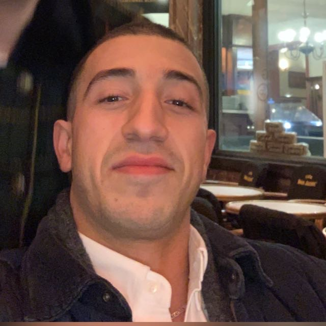

Qui suis-je ?
Passionné par l’univers IT et son évolution croissante, j’ambitionne de mettre mes compétences au service d’une entreprise à la culture innovante, enthousiaste et audacieuse. Grâce à un parcours de formation approfondie et à une somme d’expériences professionnelles performante, je suis devenu expert dans la conception et l’adaptation de sites et d’applications web.
Télécharger mon CVInformations de contact
Nom :
OUANNASSI Mehdi
Adresse :
4 Dennenlaan 1700 Dilbeek
Téléphone :
+32 485 055 337
Mail :
Permis :
B